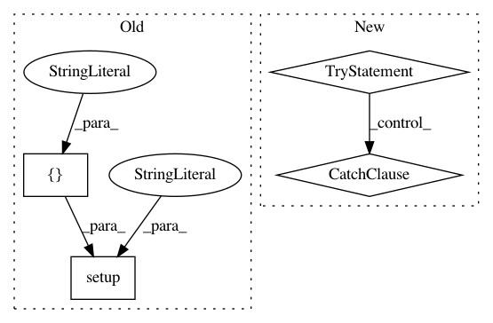

5542793f567ba5c23bc7d7e2a74c01acef2d5170,setup.py,,,#,7
Before Change
Documentation for Brian2 can be found at http://brian2.readthedocs.org
"""
setup(name="Brian2",
version="2.0a5",
packages=find_packages(),
package_data={// include template files
"brian2.codegen.runtime.numpy_rt": ["templates/*.py_"],
"brian2.codegen.runtime.weave_rt": ["templates/*.cpp",
"templates/*.h"],
"brian2.devices.cpp_standalone": ["templates/*.cpp",
"templates/*.h",
"brianlib/*.cpp",
"brianlib/*.h"],
"brian.synapses": ["*.cpp"],
// include default_preferences file
"brian2": ["default_preferences"]
},
install_requires=["numpy>=1.4.1",
"scipy>=0.7.0",
"sympy>=0.7.2",
"pyparsing",
"jinja2>=2.7",
"cython>=0.15"
],
provides=["brian2"],
extras_require={"test": ["nosetests>=1.0"],
"docs": ["sphinx>=1.0.1", "sphinxcontrib-issuetracker"]},
use_2to3=True,
ext_modules= cythonize("brian2/synapses/cythonspikequeue.pyx"),
url="http://www.briansimulator.org/",
description="A clock-driven simulator for spiking neural networks",
long_description=long_description,
author="Marcel Stimberg, Dan Goodman, Romain Brette",
author_email="Romain.Brette at ens.fr",
classifiers=[
"Development Status :: 3 - Alpha",
"Intended Audience :: Science/Research",
"License :: OSI Approved",
"Natural Language :: English",
"Operating System :: OS Independent",
"Programming Language :: Python",
"Programming Language :: Python :: 2",
"Programming Language :: Python :: 3",
"Topic :: Scientific/Engineering :: Bio-Informatics"
]
)
After Change
from setuptools.command.build_ext import build_ext
from distutils.errors import CompileError
try:
from Cython.Build import cythonize
cython_available = True
except ImportError:
cython_available = False
def has_option(name):
try:
sys.argv.remove("--%s" % name)
return True
In pattern: SUPERPATTERN
Frequency: 3
Non-data size: 4
Instances
Project Name: brian-team/brian2
Commit Name: 5542793f567ba5c23bc7d7e2a74c01acef2d5170
Time: 2013-11-14
Author: marcel.stimberg@ens.fr
File Name: setup.py
Class Name:
Method Name:
Project Name: mathics/Mathics
Commit Name: 6525df74b152ebf457064aa757faac80df9cdd89
Time: 2020-10-24
Author: rb@dustyfeet.com
File Name: setup.py
Class Name:
Method Name:
Project Name: hyperopt/hyperopt
Commit Name: 0ffbad0ae0e3d389f6d9c01c2e0e6bbea9e2018a
Time: 2012-02-14
Author: james.bergstra@gmail.com
File Name: setup.py
Class Name:
Method Name: